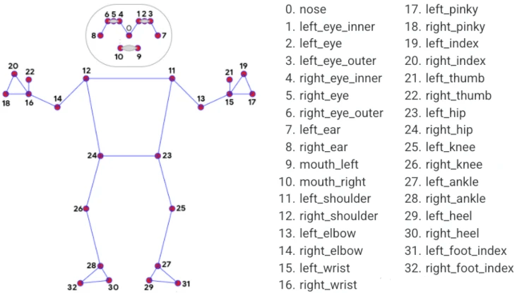

本文是基于mediapipe的姿态识别和简单行为识别，通过对人体姿态关键点的坐标的使用，实现简单的举手检测，其行为检测的精度主要取决于mediapipe关键点的检测精度。
以Pycharm为例，直接在终端里面输入指令
pip install mediapipe
等待下载完毕即可
Mediapipe是一个用于构建机器学习管道的框架，用户处理视频、音频等时间序列数据。这个跨平台框架使用于桌面/服务器、Android、ios和各类嵌入式设备。
目前mediapipe包含以下16个solution，总的来说，mediapipe是一个很好的库，可以解决ML项目中面临的大部分麻烦，而且很适合做行为识别方向练手使用。
1.人脸检测
2.Face Mesh
3.虹膜
4.手
5.姿态
6.人体
7.人物分割
8.头发分割
9.目标检测
10.Box Tracking
11.instant Motion Tracking
12.3D目标检测
13.特征匹配
14.AutoFlip
15.MediaSequence
16.YouTuBe_8M
这里仅使用mediapipe关于人体识别的方法（solution），谷歌官方将这种人体姿态识别的方法叫做Blazepose。
（1） 检测前的准备工作
1
2
3
4
5
6
7
8
9
10
11
12
13
14
15
16
| '''导入一些基本的库'''
import cv2
import mediapipe as mp
import time
from tqdm import tqdm
import numpy as np
from PIL import Image, ImageFont, ImageDraw
mp_pose = mp.solutions.pose
mp_drawing = mp.solutions.drawing_utils
pose = mp_pose.Pose(static_image_mode=True)
|
（2）检测图片
1
2
3
4
5
6
7
8
9
10
11
12
13
14
15
16
17
18
19
20
21
22
23
24
25
26
27
28
29
30
31
32
33
34
35
36
37
38
39
40
41
| def process_frame(img):
start_time = time.time()
h, w = img.shape[0], img.shape[1]
tl = round(0.005 * (img.shape[0] + img.shape[1]) / 2) + 1
tf = max(tl-1, 1)
img_RGB = cv2.cvtColor(img, cv2.COLOR_BGR2RGB)
results = pose.process(img_RGB)
keypoints = ['' for i in range(33)]
if results.pose_landmarks:
mp_drawing.draw_landmarks(img, results.pose_landmarks, mp_pose.POSE_CONNECTIONS)
for i in range(33):
cx = int(results.pose_landmarks.landmark[i].x * w)
cy = int(results.pose_landmarks.landmark[i].y * h)
keypoints[i] = (cx, cy)
else:
print("NO PERSON")
struction = "NO PERSON"
img = cv2.putText(img, struction, (25, 100), cv2.FONT_HERSHEY_SIMPLEX, 1.25, (255, 255, 0),
6)
end_time = time.time()
process_time = end_time - start_time
fps = 1 / process_time
colors = [[random.randint(0,255) for _ in range(3)] for _ in range(33)]
radius = [random.randint(8,15) for _ in range(33)]
for i in range(33):
cx, cy = keypoints[i]
img = cv2.circle(img, (cx, cy), radius[i], colors[i], -1)
'''str_pose = get_pos(keypoints)#获取姿态
cv2.putText(img, "POSE-{}".format(str_pose), (12, 100), cv2.FONT_HERSHEY_TRIPLEX,
tl / 3, (255, 0, 0), thickness=tf)'''
cv2.putText(img, "FPS-{}".format(str(int(fps))), (12, 100), cv2.FONT_HERSHEY_SIMPLEX,
tl/3, (255, 255, 0),thickness=tf)
return img
|
如果需要执行代码，则加入主函数使用
1
2
3
4
5
6
7
8
9
10
11
12
13
14
15
16
| if __name__ == '__main__':
img0 = cv2.imread("./data/outImage--20.jpg")
image = cv2.imdecode(np.fromfile(image_path, dtype=np.uint8), -1)
img = image.copy()
image = process_frame(img)
fig, axes = plt.subplots(nrows=1, ncols=2)
axes[0].imshow(img0[:,:,::-1])
axes[0].set_title("原图")
axes[1].imshow(image[:,:,::-1])
axes[1].set_title("检测并可视化后的图片")
plt.rcParams["font.sans-serif"] = ['SimHei']
plt.rcParams["axes.unicode_minus"] = False
plt.show()
fig.savefig("./data/out.png")
|
（3）检测视频
任何不涉及3D卷积的机器视觉方法，检测视频其实就是检测图片，因为视频是由多帧图片融合得来的。比如说一个30帧的视频，那么它的每一秒钟，就是由30张图片叠加而成。将这些分割出的图片分别进行检测，最后将检测的图片进行融合，得到的就是检测后的视频。有了这个依据，我们就可以把图片检测过程写成一个函数，在视频的每一帧中调用这个函数就可以了。
一般使用OpenCV库将视频分解为图片帧的形式，示例代码如下：
1
2
3
4
5
6
7
8
9
10
11
12
13
14
15
16
17
18
19
20
21
22
23
24
25
26
27
28
29
30
31
32
33
34
35
36
37
| def video2image(videoPath="./video/demo1.mp4",
image_dir="./image"):
'''videoPath是视频路径， image_dir是图片保存的文件夹路径'''
cap = cv2.VideoCapture(videoPath)
frame_count = 0
while(cap.isOpened()):
success,frame = cap.read()
if not success:
break
frame_count += 1
print("视频总帧数：", frame_count)
cap.release()
cap = cv2.VideoCapture(videoPath)
count = 0
with tqdm(total=frame_count-1) as pbar:
try:
while(cap.isOpened()):
success, frame = cap.read()
if not success:
break
try:
if count % 20 == 0:
cv2.imwrite("{}/outImage--{}.jpg".format(image_dir, count), frame)
except:
print("error")
pass
if success == True:
pbar.update(1)
count+=1
except:
print("中途中断")
pass
cv2.destroyAllWindows()
cap.release()
print("视频已经处理结束，进行下一步操作！！！")
|
那么落实到本文想要实现的功能上，就可以在视频分解出的帧后面加上图片检测函数。
代码如下所示：
1
2
3
4
5
6
7
8
9
10
11
12
13
14
15
16
17
18
19
20
21
22
23
24
25
26
27
28
29
30
31
32
33
34
35
36
37
38
39
40
41
42
43
44
45
| def process_video(video_path="./Data.mp4"):
video_flag = False
cap = cv2.VideoCapture(video_path)
out_path = "./out_Data.mp4"
print("视频开始处理……")
frame_count = 0
while (cap.isOpened()):
success, frame = cap.read()
frame_count += 1
if not success:
break
cap.release()
print("总帧数 = ", frame_count)
cap = cv2.VideoCapture(video_path)
if video_flag == False:
frame_size = cap.get(cv2.CAP_PROP_FRAME_WIDTH), cap.get(cv2.CAP_PROP_FRAME_HEIGHT)
fourcc = cv2.VideoWriter_fourcc(*'mp4v')
fps = cap.get(cv2.CAP_PROP_FPS)
out = cv2.VideoWriter(out_path, fourcc, fps, (int(frame_size[0]),int(frame_size[1])), )
with tqdm(total=frame_count-1) as pbar:
try:
while cap.isOpened():
success, frame = cap.read()
if success:
pbar.update(1)
frame = process_frame(frame)
cv2.namedWindow("frame", cv2.WINDOW_NORMAL)
cv2.imshow("frame", frame)
out.write(frame)
if cv2.waitKey(1) == 27:
break
else:
break
except:
print("中途中断")
pass
cap.release()
cv2.destroyAllWindows()
out.release()
print("视频已保存至", out_path)
|
1.原理介绍
将mediapipe用于行为检测是比较复杂的一件事；如果这样做，那么行为检测的精度完全取决于mediapipe关键点的检测精度，于是，可以根据下图中人的关节夹角来对人的姿势进行检测。

如举手的时候，手腕的15、16点应该是略高于0点，并且手臂于水平方向夹角一定是在80度到100度之间，那么这样就可以完成对举手动作的简单分类。
2.实现过程
首先要知道，由坐标求得矢量的公式，其实就是两个坐标相减。
如已知三点P0(x0,y0)、P1(x1,y1)和P2(x2,y2)，那么求P0P1和P0P2两个矢量之间的夹角公式,用代码描写如下：
1
2
3
4
5
6
7
8
9
10
11
| v1 = (x1, y1) - (x2, y2)
v2 = (x0, y0) - (x2, y2)
def get_angle(v1, v2):
angle = np.dot(v1, v2) / (np.sqrt(np.sum(v1 * v1)) * np.sqrt(np.sum(v2 * v2)))
angle = np.arccos(angle) / 3.14 * 180
cross = v2[0] * v1[1] - v2[1] * v1[0]
if cross < 0:
angle = - angle
return angle
|
这样就可以得到两个矢量的夹角。
之后就可以通过夹角对行为进行判断，这里的规则是：
1
2
3
4
5
6
7
8
9
10
11
12
13
14
15
16
17
18
19
20
21
22
23
24
25
26
27
28
| def get_pos(keypoints):
str_pose = ""
keypoints = np.array(keypoints)
p_x_right, p_y_right = keypoints[16]
p_x_left, p_y_left = keypoints[15]
p_x_right_body, p_y_right_body = keypoints[11]
p_x_left_body, p_y_left_body = keypoints[12]
if p_y_right < p_y_right_body:
v1 = keypoints[14] - keypoints[16]
v2 = keypoints[12] - keypoints[11]
get_right_arm = abs(get_angle(v1, v2))
if 60 < get_right_arm < 120:
str_pose = "RIGHT RAISE"
elif p_y_left < p_y_left_body:
v1 = keypoints[13] - keypoints[15]
v2 = keypoints[11] - keypoints[12]
get_left_arm = abs(get_angle(v1, v2))
if 60 < get_left_arm < 120:
str_pose = "LEFT RAISE"
else:
str_pose = "NO RAISE"
return str_pose
|
得到的str_pose就是行为字符串，在process_frame中可以得到可视化结果。
四、总结和一些结果展示
到这里，关键点检测与简单行为检测就已经全部结束了，这里是把基于tkinter的UI设计与mediapipe进行融合，实现可视化的交互过程，具体代码可以看github。
以下是一些样例 感谢我的室友。


2023年12月15日修改：增加视频检测，修改部分代码
2023年12月25日修改：修改可视化窗口，优化部分代码